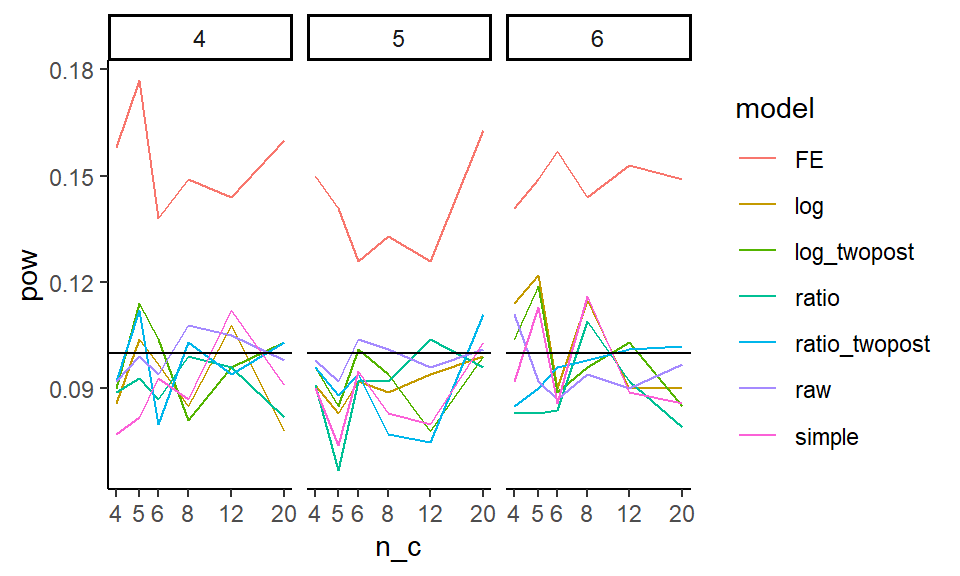

- Welcome
- I An Introductory Look
- 1 Introduction
- 2 Programming Preliminaries
- 3 An initial simulation
- II Structure and Mechanics of a Simulation Study
- 4 Structure of a simulation study
- 5 Case Study: Heteroskedastic ANOVA
- 6 Data-generating processes
- 6.1 Examples
- 6.2 Components of a DGP
- 6.3 A statistical model is a recipe for data generation
- 6.4 Plot the artificial data
- 6.5 Check the data-generating function
- 6.6 Example: Simulating clustered data
- 6.7 Sometimes a DGP is all you need
- 6.8 More to explore
- 6.9 Exercises
- 6.9.1 The Welch test on a shifted-and-scaled \(t\) distribution
- 6.9.2 Plot the bivariate Poisson
- 6.9.3 Check the bivariate Poisson function
- 6.9.4 Add error-catching to the bivariate Poisson function
- 6.9.5 A bivariate negative binomial distribution
- 6.9.6 Another bivariate negative binomial distribution
- 6.9.7 Plot the data from a cluster-randomized trial
- 6.9.8 Checking the Cluster RCT DGP
- 6.9.9 More school-level variation
- 6.9.10 Cluster-randomized trial with baseline predictors
- 6.9.11 3-parameter IRT datasets
- 6.9.12 Check the 3-parameter IRT DGP
- 6.9.13 Explore the 3-parameter IRT model
- 6.9.14 Random effects meta-regression
- 6.9.15 Meta-regression with selective reporting
- 7 Data analysis procedures
- 8 Running the Simulation Process
- 9 Performance criteria
- 9.1 Different kinds of performance
- 9.2 Assessing a Point Estimator
- 9.3 Assessing a Standard Error Estimator
- 9.4 Assessing an Inferential Procedure (Hypothesis Testing)
- 9.5 Assessing Confidence Intervals
- 9.6 Additional Thoughts on Measuring Performance
- 9.7 Uncertainty in Performance Estimates (the Monte Carlo Standard Error)
- 9.8 Exercises
- 10 Project: Cronbach Alpha
- III Multifactor Simulations
- 11 Designing the multifactor simulation experiment
- 12 Analyzing the multifactor experiment
- 13 Case study: Comparing different estimators
- 14 Presentation of simulation results
- IV Computational Considerations
- 15 Ensuring reproducibility
- 16 Optimizing code (and why you often shouldn’t)
- 17 Error trapping and other headaches
- 18 Saving files and results
- 19 Parallel Processing
- 20 Simulations as evidence
- V Complex Data Structures
- 21 Using simulation as a power calculator
- 22 Simulation under the Potential Outcomes Framework
- 23 The Parametric bootstrap
- Appendices
- A Coding tidbits
- B Further readings and resources
21.4 Evaluating power
Once our simulation is run, we can explore power as a function of the design characteristics. In particular, we eventually want to calculate the chance of noticing effects of different sizes, given various sample sizes we might employ. Our driving question is how few schools on the treated side can we get away with? Also, we want to know how much having more schools on the control side allows us to get away with fewer schools on the treated side.
21.4.1 Checking validity of our models
Before we look at power, we need to check on whether our different models are valid.
This is especiallt important as we are in a small \(n\) context, so we know asymptotics may not hold as they should.
To check our models for validity we subset our trials to where tx = 1, and look at the rejection rates.
We first run a regression to see if rejection is a function of sample size (are smaller samples more invalid) and treatment-control imbalance. We center both variables so our intercepts are overall average rejection rates for each model considered:
sres = mutate( sres,
n = n_c + n_t,
imbalance = pmax( n_t / n_c, n_c / n_t ) - 1 )
sres$n = (sres$n - mean(sres$n)) / sd(sres$n)
mod = lm( pow ~ 0 + (n + imbalance) * model - n - imbalance,
data = filter( sres, tx == 1 ) )
broom::tidy(mod) %>%
knitr::kable( digits = 3)| term | estimate | std.error | statistic | p.value |
|---|---|---|---|---|
| modelFE | 0.143 | 0.006 | 24.593 | 0.000 |
| modellog | 0.099 | 0.006 | 16.999 | 0.000 |
| modellog_twopost | 0.093 | 0.006 | 15.939 | 0.000 |
| modelratio | 0.090 | 0.006 | 15.437 | 0.000 |
| modelratio_twopost | 0.093 | 0.006 | 15.967 | 0.000 |
| modelraw | 0.092 | 0.006 | 15.751 | 0.000 |
| modelsimple | 0.091 | 0.006 | 15.571 | 0.000 |
| n:modelFE | -0.003 | 0.006 | -0.459 | 0.647 |
| n:modellog | 0.001 | 0.006 | 0.141 | 0.888 |
| n:modellog_twopost | -0.005 | 0.006 | -0.919 | 0.360 |
| n:modelratio | 0.000 | 0.006 | 0.071 | 0.944 |
| n:modelratio_twopost | 0.002 | 0.006 | 0.414 | 0.680 |
| n:modelraw | -0.006 | 0.006 | -1.008 | 0.316 |
| n:modelsimple | 0.001 | 0.006 | 0.191 | 0.849 |
| imbalance:modelFE | 0.005 | 0.005 | 0.857 | 0.394 |
| imbalance:modellog | -0.003 | 0.005 | -0.587 | 0.558 |
| imbalance:modellog_twopost | 0.004 | 0.005 | 0.708 | 0.480 |
| imbalance:modelratio | 0.000 | 0.005 | -0.001 | 0.999 |
| imbalance:modelratio_twopost | 0.001 | 0.005 | 0.249 | 0.804 |
| imbalance:modelraw | 0.006 | 0.005 | 1.154 | 0.251 |
| imbalance:modelsimple | 0.001 | 0.005 | 0.180 | 0.858 |
We can also plot the nominal rejection rates under the null:
sres %>% filter( tx == 1 ) %>%
ggplot( aes( n_c, pow, col=model ) ) +
facet_wrap( ~ n_t, nrow=1 ) +
geom_line() +
geom_hline( yintercept = 0.10 ) +
scale_x_log10(breaks=unique(sres$n_c) )
We see the fixed effect models have elevated rates of rejection. Interestingly, these rates do not seem particularly dependent on sample size or treatment-control imbalance (note lack of significant coefficeints on our regression model). The other models all appear valid.
We can also check for bias of our methods:
sres %>% group_by( model, tx ) %>%
summarise( E_est = mean( E_est ) ) %>%
pivot_wider( names_from="tx", values_from="E_est" )## # A tibble: 7 × 4
## # Groups: model [7]
## model `0.5` `0.75` `1`
## <chr> <dbl> <dbl> <dbl>
## 1 FE -0.692 -0.290 -0.000703
## 2 log -0.692 -0.288 0.00120
## 3 log_twopost -0.692 -0.291 0.00241
## 4 ratio -0.372 -0.187 -0.000937
## 5 ratio_twopost -0.289 -0.145 -0.00108
## 6 raw -0.694 -0.290 0.00327
## 7 simple -0.0206 -0.0104 0.0000998We see our models are estimating different things, none of which are the treatment effect as we parameterized it. In particular, “FE,” “log,” “raw,” and “log_twopost” are all estimating the impact on the log scale. Note that \(log( 0.5 ) \approx -0.69\) and \(log( 0.75 ) \approx -0.29\). Our “simple” estimator is estimating the impact on the absolute scale; reducing discipline rates by 50% corresponds to about a 2% reduction in actual cases. Finally, “ratio” and “ratio_twopost” are estimating the change in the average ratio of post-policy discipline to pre; they are akin to a gain score as compared to the log regressions.
21.4.2 Assessing Precision (SE)
Now, which methods are the most precise? We look at the true standard errors across our methods (we drop “simple” and the “ratio” estimators since they are not on the ratio scale):
sres %>%
group_by( model, n_c, n_t ) %>%
summarise( SE = mean(SE ) ) %>%
filter( !(model %in% c( "simple", "ratio", "ratio_twopost" ) ) ) %>%
ggplot( aes( n_c, SE, col=model )) +
facet_grid( . ~ n_t ) +
geom_line() + geom_point() +
geom_hline( yintercept = 0 ) +
labs( colour = "Model" )
It looks like averaging two years for the outcome is helpful, and bumps up precision. The two way fixed effects model seems to react to the number of control units differently than the other estimators; it is way more precise when the number of controls is few, but the other estimators catch up. The “raw” estimator gives a baseline of no covariate adjustment; everything is substantially more precise than it. The covariates matter a lot.
21.4.3 Assessing power
We next look at power over our explored contexts, for the models that we find to be valid (i.e., not FE).
sres %>%
filter( model != "FE",tx != 1 ) %>%
ggplot( aes( n_c, pow, col=model )) +
facet_grid( . ~ tx + n_t, labeller = label_both ) +
geom_line() + geom_point() +
geom_hline( yintercept = 0, col="grey" ) +
geom_hline( yintercept = c( 0.10, 0.80 ), lty=2 ) +
theme_minimal()+ theme( legend.position="bottom",
legend.direction="horizontal",
legend.key.width=unit(1,"cm"),
panel.border = element_blank() ) +
labs( title="Power for various methods vs number of controls.",
y = "Power" )
We mark 80% power with a dashed line. For a 25% reduction in discipline, nothing reaches desired levels of power. For 50% reduction, some designs do, but we need substantial numbers of control schools. Averaging two years of outcomes post-treatment seems important: the “twopost” methods have a distinct power bump. For a single year of outcome data, the log model seems our best bet.
21.4.4 Assessing Minimum Detectable Effects
Sometimes we want to know, given a design, what size effect we might be able to detect. The usual measure for this is the Minimum Detectable Effect (MDE), which is usually the size of the smallest effect we could detect with power 80%.
To calculate Minimal Detectable Effects (MDEs) for the log-scale estimators, we first average our SEs over our different designs, grouped by sample size, and then convert the SEs to MDEs by multiplying by 2.8. We then have to convert to our treatment scale by flipping the sign and exponentiating, to get out of the log scale.
sres2 = sres %>%
group_by( model, n_c, n_t ) %>%
summarise( SE = mean( SE ),
E_SE_hat = mean( E_SE_hat ) ) %>%
mutate( MDE = exp( - (1.64 + 0.8) * SE ) )
sres2 %>%
filter( !(model %in% c( "simple", "ratio", "ratio_twopost" ) ) ) %>%
ggplot( aes( n_c, MDE, col=model ) ) +
facet_wrap( ~ n_t, labeller = label_both ) +
geom_point() + geom_line() +
geom_hline( yintercept = 0.5 ) +
theme_minimal() +
scale_x_log10( breaks = unique( sres$n_c ) ) +
theme( legend.position="bottom",
legend.direction="horizontal", legend.key.width=unit(1,"cm"),
panel.border = element_blank() ) +
labs( x = "Number of control units", y = "MDE (proportion reduction of rate)",
caption = "A MDE of 0.6 means a 60% reduction (more than half) in discipline rates",
title = "MDE vs number of control units for various methods" )
Corresponding with our findings regarding precision, above, the twopost estimator is the most sensitive, finding the smallest effects.